This vignette shows how to use stemtools for creating
a set of standardized survey plots. We’ll use a simulated dataset
trust, included with the package itself.
library(stemtools)
data(trust, package = "stemtools")
head(trust)
#> police government
#> 1 Neither Agree nor Disagree Rather Disagree
#> 2 Definitely Agree Definitely Disagree
#> 3 Definitely Agree Definitely Disagree
#> 4 Neither Agree nor Disagree Rather Disagree
#> 5 Neither Agree nor Disagree Neither Agree nor Disagree
#> 6 Definitely Agree Neither Agree nor Disagree
#> eu army scientists
#> 1 Neither Agree nor Disagree Definitely Agree Neither Agree nor Disagree
#> 2 Neither Agree nor Disagree Rather Agree Rather Disagree
#> 3 Rather Agree Definitely Agree Rather Disagree
#> 4 Rather Disagree Definitely Agree Neither Agree nor Disagree
#> 5 Neither Agree nor Disagree Definitely Agree Rather Agree
#> 6 Neither Agree nor Disagree Definitely Disagree Neither Agree nor Disagree
#> eu_index nat_index age W biggest_concern1 biggest_concern2
#> 1 Likes EU Neutral 41 0.6452540 Unemployment Unemployment
#> 2 Neutral Satisfied 38 0.1800867 Immigration Corruption
#> 3 Likes EU Disatisfied 39 0.2939668 Immigration Healthcare
#> 4 Neutral Neutral 34 0.8033685 Immigration Healthcare
#> 5 Likes EU Satisfied 41 0.3471653 Healthcare Unemployment
#> 6 Dislikes EU Disatisfied 35 1.2082489 Immigration Healthcare
#> biggest_concern3
#> 1 Immigration
#> 2 Immigration
#> 3 Corruption
#> 4 Corruption
#> 5 Immigration
#> 6 CorruptionHow the plotting functions are built
The plotting functions are composed from a shared frequency core. All
of them call stem_summarise_cat() to compute (possibly
weighted) proportions and their 95% confidence intervals, and then hand
the aggregated data to a ggplot2 template. You can call
the frequency function directly if you need the numbers themselves:
stem_summarise_cat(trust, item = police, group = eu_index, weight = W)
#> # A tibble: 20 × 5
#> eu_index police freq freq_low freq_upp
#> <fct> <fct> <dbl> <dbl> <dbl>
#> 1 Likes EU Definitely Agree 0.395 0.327 0.463
#> 2 Likes EU Rather Agree 0.318 0.251 0.384
#> 3 Likes EU Neither Agree nor Disagree 0.149 0.104 0.194
#> 4 Likes EU Rather Disagree 0.0643 0.0264 0.102
#> 5 Likes EU Definitely Disagree 0.0734 0.0346 0.112
#> 6 Neutral Definitely Agree 0.405 0.330 0.480
#> 7 Neutral Rather Agree 0.312 0.242 0.383
#> 8 Neutral Neither Agree nor Disagree 0.178 0.117 0.239
#> 9 Neutral Rather Disagree 0.0637 0.0297 0.0978
#> 10 Neutral Definitely Disagree 0.0406 0.00841 0.0728
#> 11 Dislikes EU Definitely Agree 0.400 0.305 0.495
#> 12 Dislikes EU Rather Agree 0.326 0.234 0.418
#> 13 Dislikes EU Neither Agree nor Disagree 0.155 0.0778 0.233
#> 14 Dislikes EU Rather Disagree 0.0368 0.00956 0.0640
#> 15 Dislikes EU Definitely Disagree 0.0819 0.0190 0.145
#> 16 Doesn't Know Definitely Agree 0.308 0.191 0.424
#> 17 Doesn't Know Rather Agree 0.453 0.315 0.591
#> 18 Doesn't Know Neither Agree nor Disagree 0.180 0.0871 0.272
#> 19 Doesn't Know Rather Disagree 0.0139 -0.00215 0.0300
#> 20 Doesn't Know Definitely Disagree 0.0455 -0.00160 0.0926Every plotting function accepts the same core arguments:
-
item– the categorical variable to plot, -
group– an optional grouping variable, -
weight– optional survey weights (passed to surveycore), -
paletteanddirection– the Stem colour palette to use, -
label_*– controls for the percentage labels.
Simple bar plot
stem_barplot() draws the distribution of a single
categorical variable as horizontal bars, one bar per category.
stem_barplot(trust, item = government)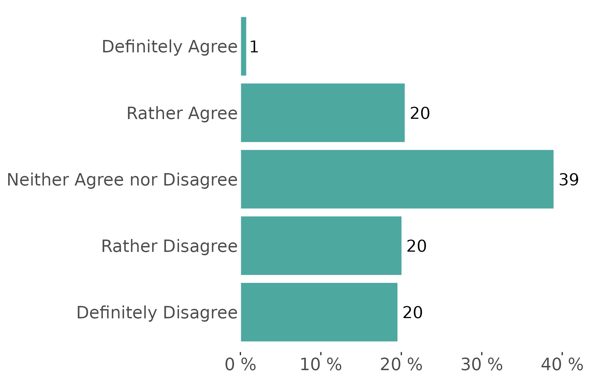
Supplying a group variable draws dodged bars so the
categories can be compared across groups. Proportions are then computed
within each group.
stem_barplot(trust, item = police, group = eu_index, weight = W)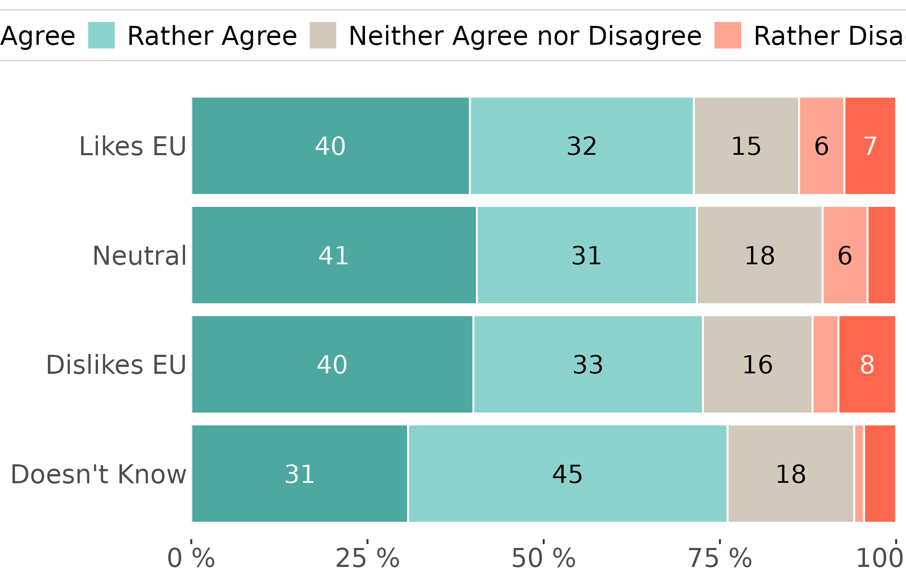
Confidence intervals are always computed and can be shown with
errorbar = TRUE.
stem_barplot(trust, item = government, errorbar = TRUE)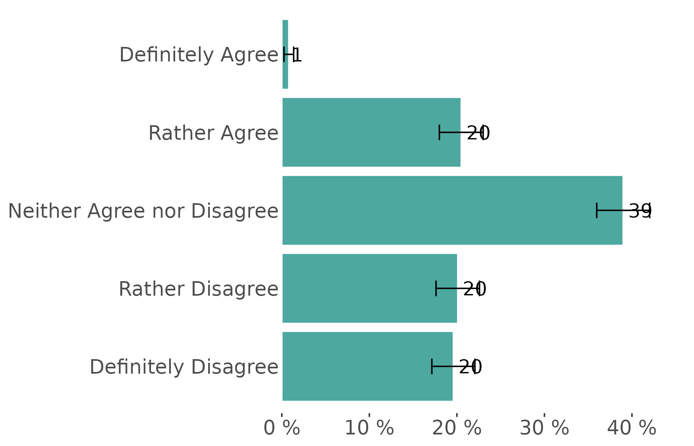
Stacked bar plot
stem_barstack() draws one stacked horizontal bar per
category of the group variable. Each bar sums to 100%,
which makes it easy to compare the composition of the item across
groups.
stem_barstack(trust, item = police, group = eu_index, weight = W)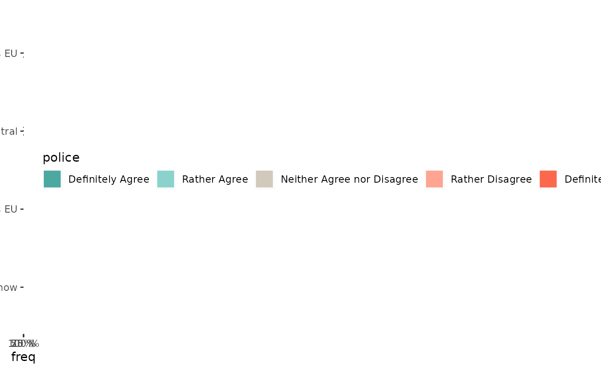
Inline bar plot
stem_inline() is a compact summary of a single variable
as one stacked horizontal bar.
stem_inline(trust, item = police, weight = W)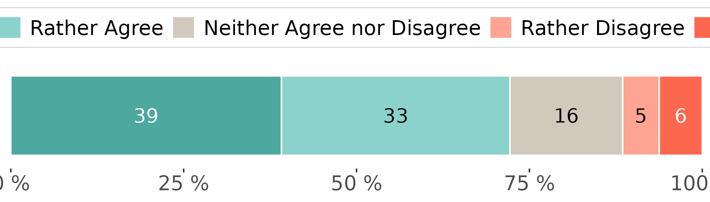
Battery of like items
stem_battery() plots several variables that share the
same response categories (a Likert battery, say) as one chart with a
stacked bar per item. Pass the items with tidyselect helpers and,
optionally, order_by to sort the items by their combined
share of one or more categories.
stem_battery(trust,
items = c(police, eu, government, army, scientists),
weight = W,
order_by = c("Definitely Agree", "Rather Agree"))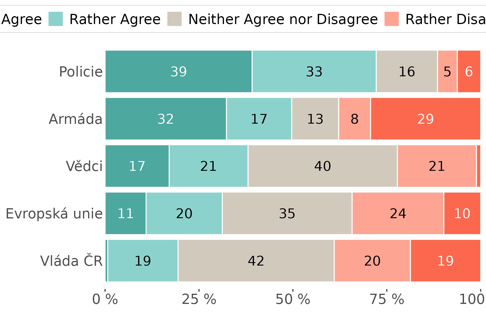
Item labels (the "label" attribute) are used
automatically when present; set item_label = FALSE to use
the bare variable names.
Multiple-choice items
stem_multiselect() summarises a set of “select all that
apply” items, rescaling the frequencies so the bars show the share of
respondents who picked each option (rather than the share of
responses).
stem_multiselect(trust, items = dplyr::starts_with("biggest_concern"), weight = W)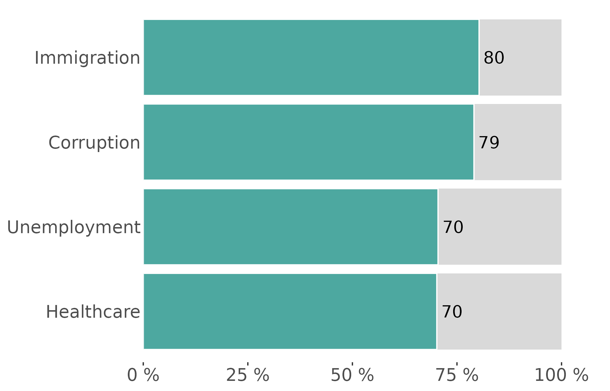
Supplying a group variable draws dodged bars for a
within-group comparison.
Customizing labels
By default the plots print a percentage label on each bar (set
labels = FALSE to hide them). label_accuracy
controls rounding (1 for whole numbers, 0.1
for one decimal place), label_suffix sets the text appended
to each label and label_hide suppresses labels for
proportions below a threshold.
stem_barstack(trust,
item = police,
group = eu_index,
label_accuracy = 0.1,
label_hide = 0.1)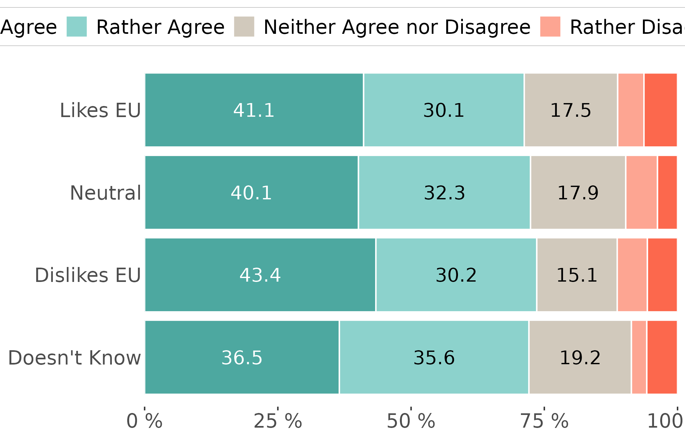
Colours
Use palette to pick one of the Stem palettes and
direction = -1 to reverse it.
stem_barstack(trust, item = police, group = eu_index, palette = "div2")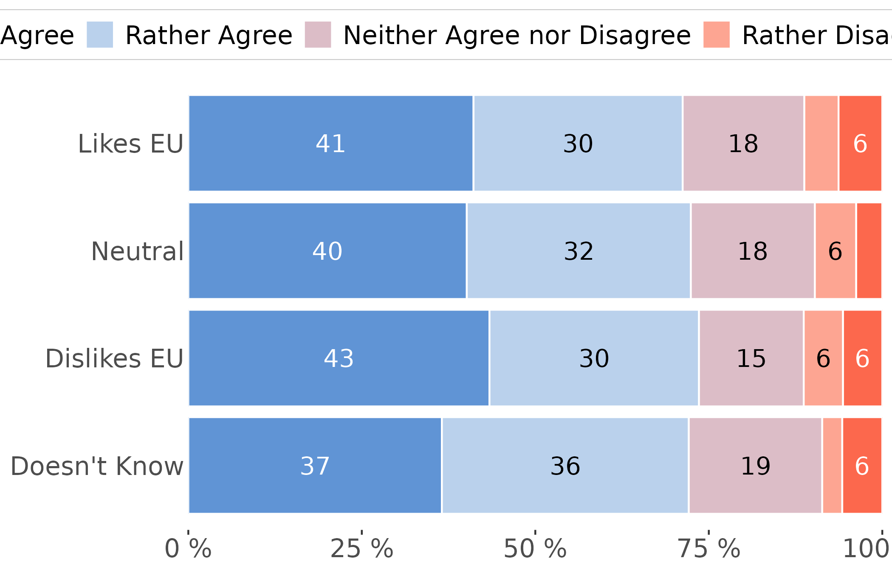
Collapsing categories
collapse_item and collapse_group collapse
(or rename) categories by passing a named list, exactly as in
stem_summarise_cat().
stem_barstack(trust,
item = police,
group = eu_index,
collapse_item = list(`Ano` = c("Definitely Agree", "Rather Agree"),
`Ani ano, ani ne` = "Neither Agree nor Disagree",
`Ne` = c("Rather Disagree", "Definitely Disagree")))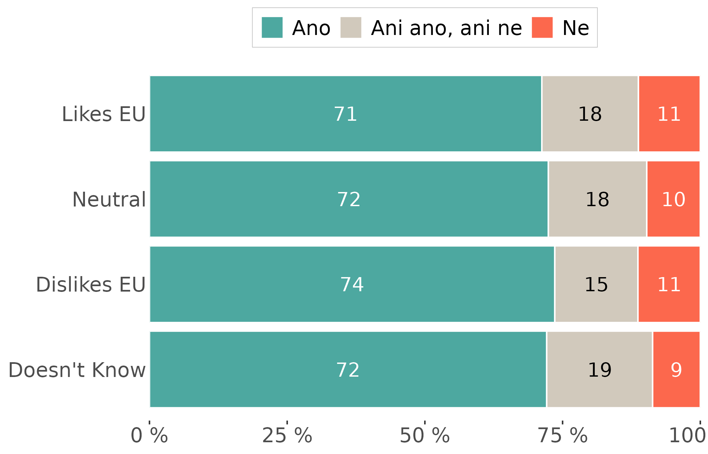
Weights
If a weight variable is specified, weights are treated
as survey weights and passed into surveycore, which
builds a Taylor-series survey design. Manipulating that design uses
surveytidy, whose verbs mirror dplyr, so
weighted and unweighted code read the same way.
With unweighted data, the confidence intervals are computed using the
basic
formula. With very small proportions and small samples this can lead to
bounds outside of the (0, 1) range. With weighted data, the
confidence intervals come from surveycore using
Taylor-series linearization.
stem_barplot(trust, item = government, weight = W)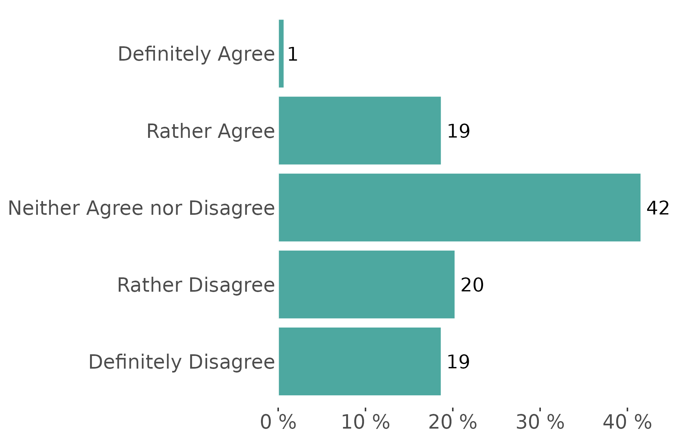
Further customization
Every function returns a standard ggplot2 object, so you can keep adding layers, scales and theme tweaks:
stem_barplot(trust, item = government) +
ggplot2::labs(title = "Trust in the government") +
theme_stem()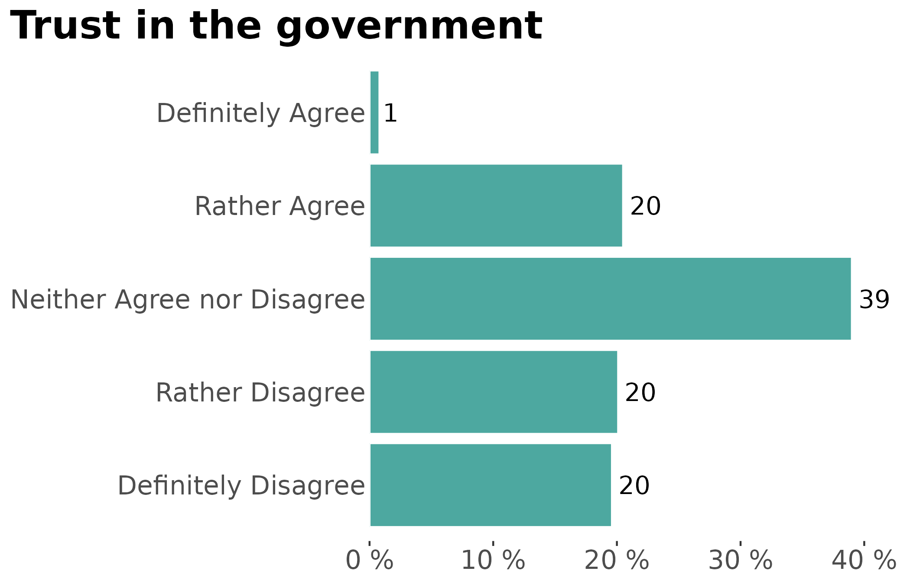